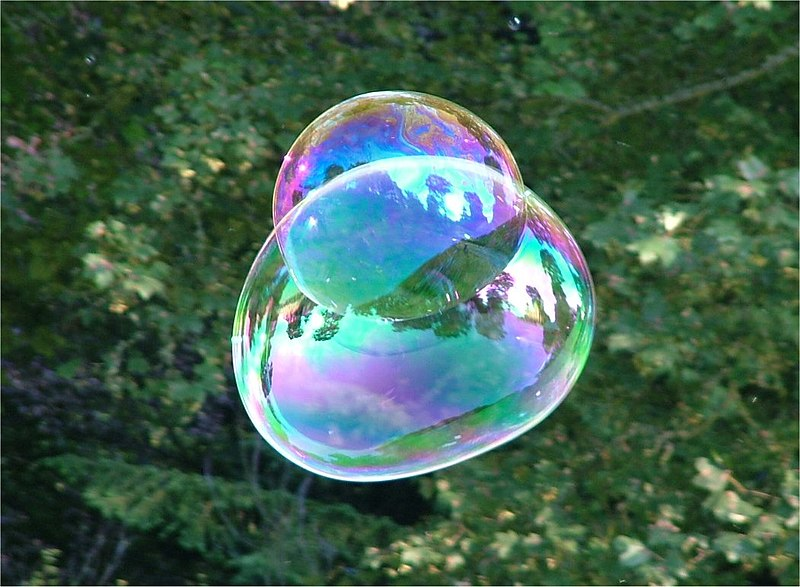
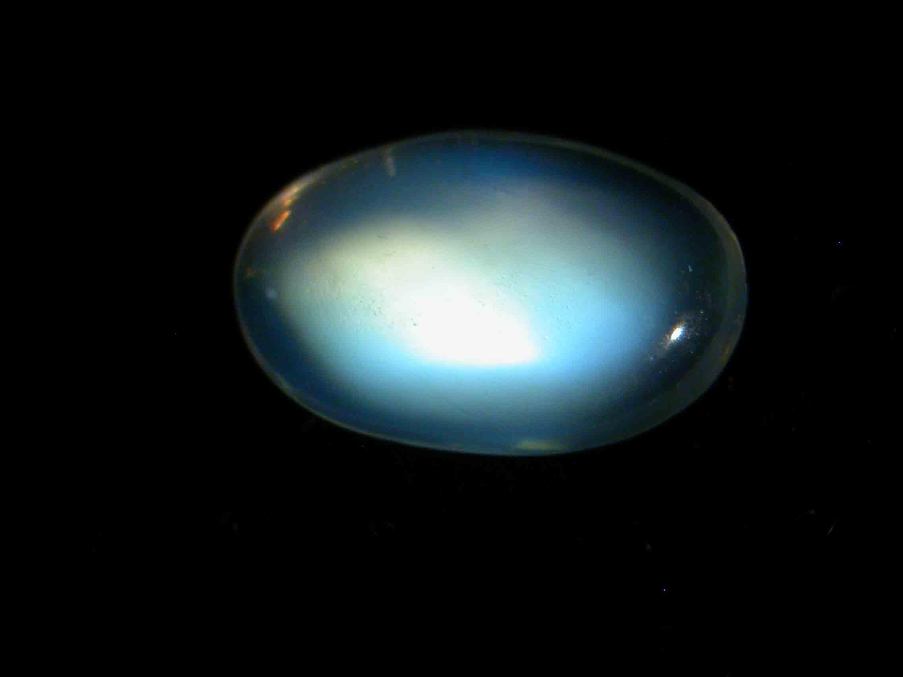

Instead of being truly blue, many blue organisms have physical features that create a blue iridescence.
- Many creatures, including birds, fish, and insects, that seem blue actually have structural characteristics that give them a blue iridescence rather than being truly blue. The term "structural coloration" is used to describe this. Physical characteristics of an object rather than pigments, which form the basis of pigmentary coloration, are what give an object its color.
- When seen from various angles, an object develops iridescence, which causes it to appear to change colors. It is comparable to how a soap bubble changes colors in the light or how a CD reflects various colors.
- Blue structural coloration gets its blue tint from how light reacts with an animal's feather, scale, or exoskeleton surface. These structures' surfaces are made up of layers of cells or scales that have been stacked such that they interfere with light in particular ways. Blue iridescence results from the interference-induced stronger reflection of some light wavelengths than of others.
- Therefore, these creatures have unique pigments or structures in their feathers, scales, or wings that give them the appearance of being blue. However, this hue is not a result of a blue pigment; rather, it results from the way light reflects off of these unique structures. As the light or your viewing angle changes, the color also changes.
- It may be difficult to understand the structural factors that contribute to this blue iridescence. For example, the blue hue is produced by the interaction of light with the exquisite pattern of some bird feathers. The feathers on these birds' bodies are layered one on top of the other, and each has a distinct refractive index. When light touches the feather, these layers interact with it, reflecting some light waves more strongly than others and giving the feather its blue hue.
- The blue hue is a result of light's interaction with the scales or exoskeletons of other species. These scales' or exoskeletons' surfaces have a number of ridges and grooves that scatter light in such a manner that certain wavelengths are reflected more strongly than others, giving the color blue.
- Keep in mind that the shimmering blue color is caused by the way light interacts with specific structural components and can vary depending on both the light source's position and the viewer's perspective.

